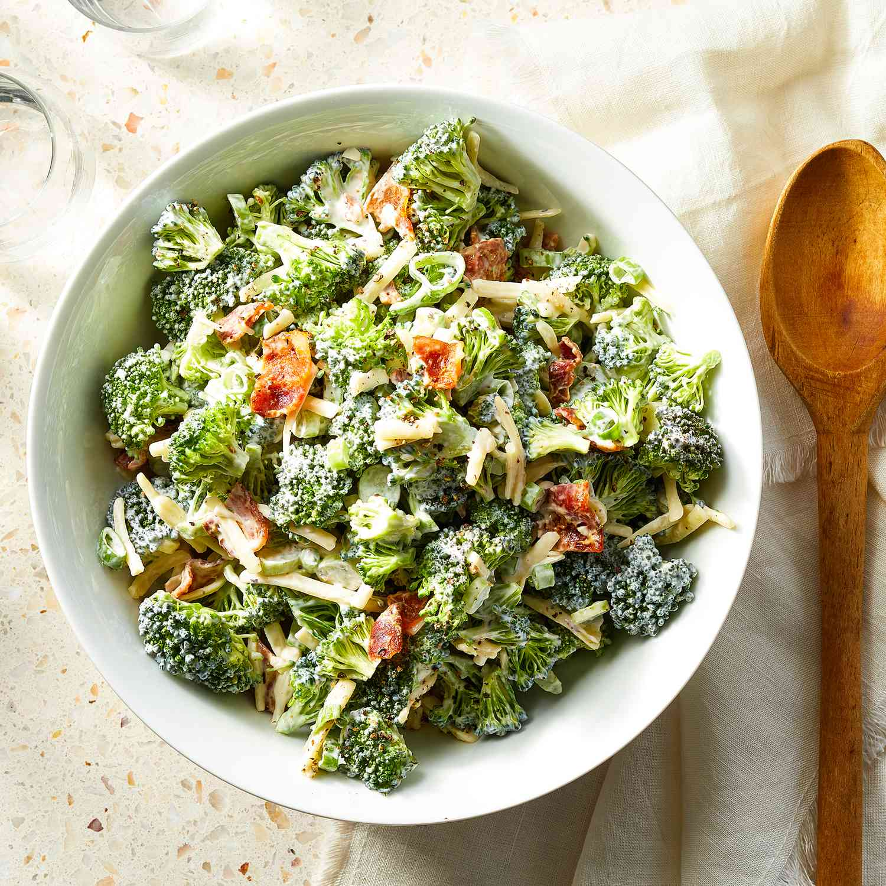

Loaded broccoli salad is a popular dish made with a variety of ingredients that are combined with broccoli to create a flavorful and nutritious salad. Typically, it starts with a base of fresh broccoli florets, which are then mixed with other vegetables such as red onions, carrots, and bell peppers. Crispy bacon bits and shredded cheese are often added to give the salad an extra boost of flavor and texture.